00
先看懂：整套採礦系統到底在做什麼
你不用先背任何配方。先把這條主線記住：準備工具 → 建工作站 → 找礦脈 → 礦石走熔煉線、寶石走研磨線 → 做融合材料 → 做高階材料 → 用於裝備強化。
新手規則：網站只要寫到「去使用某個工作站」，前面就會先教你這個工作站怎麼做、要裝什麼、負責處理什麼。
01
先做三個核心工作站
採礦前先把加工環境搭起來。下面不是只介紹名稱，而是直接告訴你材料、製作、架設與用途。
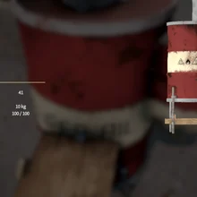
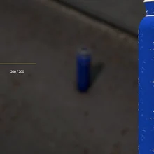
SMELTING STATION丙烷氣瓶 丙烷連接管 完成後開始熔煉
熔煉爐
金屬板 ×5＋木板 ×5→熔煉爐套件
- 準備 5 塊金屬板與 5 塊木板。
- 合成熔煉爐套件並放置。
- 依工作站需求裝上丙烷氣瓶、丙烷連接管與木箱。
- 把基礎礦石送入熔煉，取得對應礦粒。
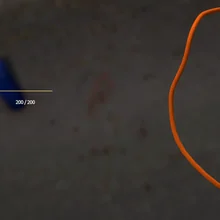
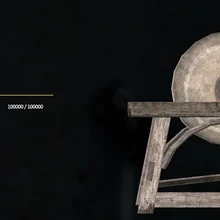
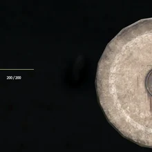
GEM PROCESSING
研磨石
石頭 ×1＋木板 ×3→研磨石套件
- 準備石頭 1 顆與木板 3 塊。
- 合成研磨石套件並完成架設。
- 挖到未加工寶石後帶到研磨石。
- 研磨後進入寶石品質升階流程。
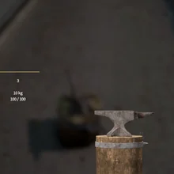
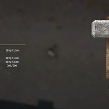
FORGING STATION
鐵砧
鐵礦粒 ×5＋木板 ×3→鐵砧套件
- 先透過熔煉爐取得鐵礦粒。
- 準備鐵礦粒 5 顆與木板 3 塊。
- 合成並架設鐵砧。
- 之後用同類礦粒 ×10 製作對應金屬錠 ×1。
順序不要搞反：熔煉爐先處理礦石 → 得到礦粒；鐵砧再把礦粒做成金屬錠；研磨石則專門處理寶石。
02
第一次採礦：拿十字鎬找到可互動礦脈
前往伺服器採礦區，手持十字鎬靠近礦脈，依遊戲互動提示進行採集。採集後先看你拿到的是「礦石」還是「未加工寶石」。
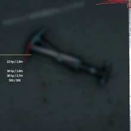
STEP 1準備十字鎬T1 強化鐵鎬可作為採礦起點；更高階工具再依伺服器進度取得。
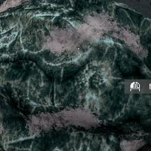
STEP 2找到礦脈礦脈外觀不只一種，靠近後確認是否有採集互動。
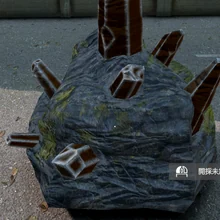
STEP 3開始採集手持十字鎬，依提示完成採礦。
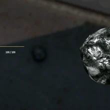
STEP 4撿起礦石一般礦石送到熔煉爐，進入金屬加工線。
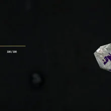
STEP 5撿起寶石未加工寶石送到研磨石，進入品質升階與融合線。
拿到一般礦石
礦石 → 熔煉爐 → 礦粒 → 收集同類礦粒 ×10 → 鐵砧 → 金屬錠。
拿到未加工寶石
未加工寶石 → 研磨石 → 瑕疵品質 → 3 合 1 升標準 → 3 合 1 升完美 → 融合鍛造。
03
礦石加工：熔煉成礦粒，再鍛造成金屬錠
六種基礎金屬都遵循相同規則。先用鐵礦完整走一次，再回來查下面的完整加工表。
採礦後把鐵礦石帶回你的工作區。
熔煉鐵礦石，產出鐵礦粒。
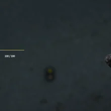
STEP 3收集礦粒同一種礦粒需要湊滿 10 顆。
把 10 顆同類礦粒放到鐵砧製作。
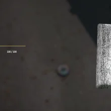
STEP 5取得金屬錠完成後得到對應金屬錠 ×1，可繼續做融合材料。
T0 基礎金屬完整加工表
| 原始礦石 | 第一次加工 | 中間材料 | 第二次加工 | 成品 |
|---|---|---|---|---|
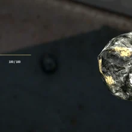 銅礦石 | 熔煉爐 | 銅礦粒 ×10 | 鐵砧 | 銅礦錠 ×1 |
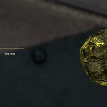 黃金礦石 | 熔煉爐 | 黃金礦粒 ×10 | 鐵砧 | 黃金礦錠 ×1 |
鐵礦石 | 熔煉爐 | 鐵礦粒 ×10 | 鐵砧 | 鐵礦錠 ×1 |
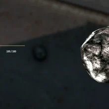 銀礦石 | 熔煉爐 | 銀礦粒 ×10 | 鐵砧 | 銀礦錠 ×1 |
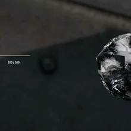 錫礦石 | 熔煉爐 | 錫礦粒 ×10 | 鐵砧 | 錫礦錠 ×1 |
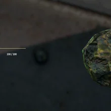 鈾礦石 | 熔煉爐 | 鈾礦粒 ×10 | 鐵砧 | 鈾礦錠 ×1 |
硫磺礦石：它屬於獨立材料，不套用上面「10 礦粒 → 1 金屬錠」的六種基礎金屬流程。
04
寶石加工：未加工 → 瑕疵 → 標準 → 完美
八種寶石各自對應不同融合材料。先用研磨石加工，再用同種、同品質寶石進行 3 合 1 升階。
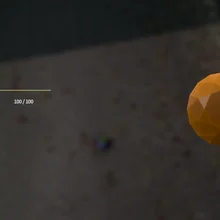
琥珀
對應融合：青銅礦錠
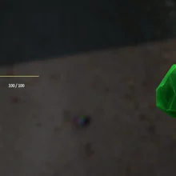
翡翠
對應融合：鋼礦錠
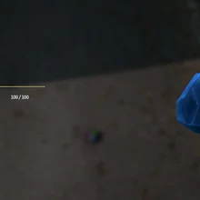
堇青石
對應融合：複合礦錠
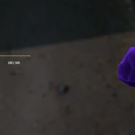
紫水晶
對應融合：虛空礦錠
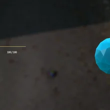
海藍寶石
對應融合：琥珀金礦錠
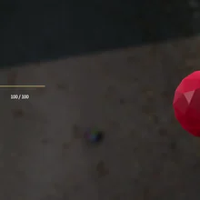
紅寶石
對應融合：紅寶石礦錠
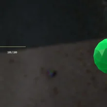
綠松石
對應融合：稜彩礦錠
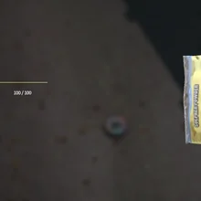
彩色鑽石
對應融合：水晶礦錠
重要：品質合成只能用「同一種寶石 + 同一品質」。不要把不同寶石混在一起做 3 合 1。
05
先完整做一次鋼礦錠，再看 T1～T3 完整融合合成表
鋼礦錠是最好理解的範例：鐵礦負責基礎金屬，翡翠負責品質融合。其餘七條線只是換成不同金屬與寶石。
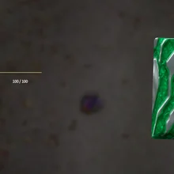
③ T1 瑕疵鋼鐵礦錠 ×1 + 瑕疵切割翡翠 ×10。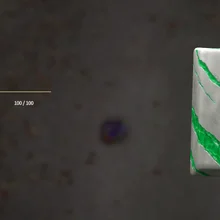
④ T2 標準鋼瑕疵鋼礦錠 ×2 + 標準切割翡翠 ×5。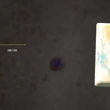
⑤ T3 完美鋼標準鋼礦錠 ×3 + 完美切割翡翠 ×2。T1～T3 完整融合合成表
| 融合系列 | 基礎來源 | T1 瑕疵 | T2 標準 | T3 完美 |
|---|---|---|---|---|
| 青銅礦錠 | 銅 + 琥珀 | 銅礦錠 ×1 + 瑕疵切割琥珀 ×10 | 瑕疵青銅礦錠 ×2 + 標準切割琥珀 ×5 | 標準青銅礦錠 ×3 + 完美切割琥珀 ×2 |
| 鋼礦錠 | 鐵 + 翡翠 | 鐵礦錠 ×1 + 瑕疵切割翡翠 ×10 | 瑕疵鋼礦錠 ×2 + 標準切割翡翠 ×5 | 標準鋼礦錠 ×3 + 完美切割翡翠 ×2 |
| 複合礦錠 | 鈾 + 堇青石 | 鈾礦錠 ×1 + 瑕疵切割堇青石 ×10 | 瑕疵複合礦錠 ×2 + 標準切割堇青石 ×5 | 標準複合礦錠 ×3 + 完美切割堇青石 ×2 |
| 虛空礦錠 | 鐵 + 紫水晶 | 鐵礦錠 ×1 + 瑕疵切割紫水晶 ×10 | 瑕疵虛空礦錠 ×2 + 標準切割紫水晶 ×5 | 標準虛空礦錠 ×3 + 完美切割紫水晶 ×2 |
| 琥珀金礦錠 | 黃金 + 海藍寶石 | 黃金礦錠 ×1 + 瑕疵切割海藍寶石 ×10 | 瑕疵琥珀金礦錠 ×2 + 標準切割海藍寶石 ×5 | 標準琥珀金礦錠 ×3 + 完美切割海藍寶石 ×2 |
| 紅寶石礦錠 | 鈾 + 紅寶石 | 鈾礦錠 ×1 + 瑕疵切割紅寶石 ×10 | 瑕疵紅寶石礦錠 ×2 + 標準切割紅寶石 ×5 | 標準紅寶石礦錠 ×3 + 完美切割紅寶石 ×2 |
| 稜彩礦錠 | 錫 + 綠松石 | 錫礦錠 ×1 + 瑕疵切割綠松石 ×10 | 瑕疵稜彩礦錠 ×2 + 標準切割綠松石 ×5 | 標準稜彩礦錠 ×3 + 完美切割綠松石 ×2 |
| 水晶礦錠 | 銀 + 彩色鑽石 | 銀礦錠 ×1 + 瑕疵切割彩色鑽石 ×10 | 瑕疵水晶礦錠 ×2 + 標準切割彩色鑽石 ×5 | 標準水晶礦錠 ×3 + 完美切割彩色鑽石 ×2 |
06
T4～T6 高階融合合成表
這一階段直接使用上一章做好的 T3 完美融合礦錠。照表把兩條支線一路合到最終的核心融合礦錠。
完美虛空礦錠 + 完美稜彩礦錠 → 昇華礦錠
完美琥珀金礦錠 + 完美水晶礦錠 → 天界礦錠
完美青銅礦錠 + 完美複合礦錠 → 無限礦錠
完美鋼礦錠 + 完美紅寶石礦錠 → 泰坦鍛造礦錠
天界礦錠 + 無限礦錠 → 血金屬錠
昇華礦錠 + 泰坦鍛造礦錠 → 虛空鋼錠
血金屬錠 + 虛空鋼錠
→ 核心融合礦錠07
特殊金屬完整合成表
這條支線不是 T1～T6 主融合樹，而是另一組特殊金屬材料。每一步都要用前一步的成品繼續製作。
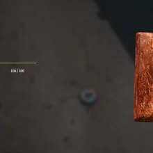
附魔礦錠海藍寶石切割 ×1 + 鈾礦錠 ×10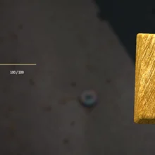
精金礦錠堇青石切割 ×1 + 附魔礦錠 ×7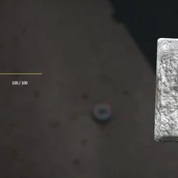
克里曼特礦錠紅寶石切割 ×1 + 鈷礦錠 ×3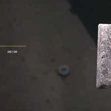
銥元素礦錠紫水晶切割 ×1 + 克里曼特礦錠 ×208
你提供的 123 張實機素材完整圖鑑
這裡不是把原始截圖直接丟上來，而是把每張畫面中央的實際物品重新裁成統一尺寸，做成同一套實機素材牆。教學正文則只挑需要的物品使用。
09
裝備強化：前面做的材料最後用在這裡
依 AshZone 裝備強化介面實際顯示的需求準備材料。網站負責教你材料怎麼做，強化時則以遊戲介面的需求為準。
- ① 選擇要強化的裝備先確認這件裝備可以進入強化流程。
- ② 查看目前階段需求確認需要哪一種融合礦錠或高階材料，以及數量。
- ③ 回本頁查配方如果缺材料，從 T1～T3、T4～T6 或特殊金屬表往回查。
- ④ 材料齊全後執行強化完成後回遊戲確認強化結果與裝備能力。
10
快速合成總表
已經會玩的玩家回來查配方時，只要記住下面五條。